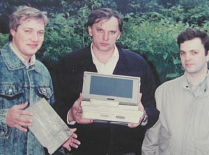
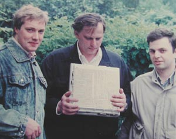
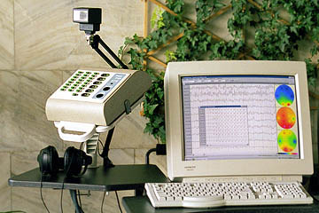
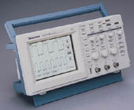
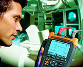
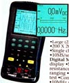
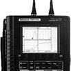

|  |
In 1989-1991 I participated in designing a first
in Russia portable myograph. In fact it was a universal device (called
Uniport) with electro- and audio-stimulators and 2 channels of registration.
It could measure not only EMG, but also EP (Evoked Potentials), Audio EP,
and ECG (Cardiogram).
Our main team consisted of 3 people (look at photos on the left):
left to right:
- Dmitri Borovikov (in jeans
jacket)
- Sergei Nikitin (medical
doctor, excellent specialist in Neurology - he lovingly shows the device)
- Lev Selector (me) |
| As you see, the device was very small and integrated
with a laptop computer (Toshiba with Intel 8080 CPU at 4 MHz). Although
small, Uniport was capable of helping doctors in ~95% of their diagnostic
needs.
We managed to make it small and effective (in comparison with prototypes
which were the size of a table) by moving as much functionality as possible
from hardware to software. |
 |
|
While designing this device we had to solve some
interesting problems. For example, the device was capable of delivering
short pulses of electric current (up to 300 Volts) - and at the same time
we had to measure very small electrical signals from human body (microvolts).
This was difficult, because impulse was creating strong eletrical interference.
Especially because both amplifier and stimulator had to receive power from
the same power supply.
The power supply unit was by itself an interesting and challenging project.
It had to be small and light, deliver very good electrical isolation accoring
to medical standards (which is KVolts), enough power for computer and all
electrical circuits - and ensure very low level of pulsation. |
Biola produces and sells neurological equipment in Russia:
• www.biola.ru
-
• biola.netfirms.com
-
• www.biola.narod.ru
-
• www.biola-photos.narod.ru
- photos of different models
• biola.netfirms.com/dl/Biola_eeg_english.doc
- MS document in English
I highly recommend this equipment. It is small, portable, works
with standard computers, has very good software (result of more than 10
years of development and perfecting it to satisfy customers' needs).
It is built by European and internatinal standards (including safety standards).
And the company is proud of being able to sell it at very low prices (starting
at $1,500). |
 |
Below is a more detailed description and
prices.
For orders please contact Biola directly:
BIOLA Ltd.
15A 3rd Cherepkovskaya
121552 Moscow, Russia
Tel: (7-095)-414-6747 or 414-6748
Email: biola.ru@mtu-net.ru |
|
NeuroScope - paperless EEG
- 8 to 32 channels
- Prices start at $1600
- 5-year warranty
NeuroScope is a family of PC-based digital encephalographs.
These compact units combine the benefits of a paperless EEG with record
quality and the ease of use normally associated with paper-and-pen models.
There are three model lines of Neuroscopes:
- NS400 - the best (8 .. 32 channels)
- NS400P - portable (8 .. 24 channels)
- NS400A - the cheapest (8 or 16
channels). Even though it has fewer features than its bigger brothers,
it retains everything necessary for routine clinical tests, at a price
that’s hard to believe.
All model lines offer exceptional quality and
reliability, yet the price is several times lower than the competition.
|
Hardware features:
-
8 to 32 EEG channels, up to 12 polygraphic channels
- High quality records even in non-shielded room
- Digital filtering using high-performance signal processor
- Low noise, wide dynamic range
- High input impedance
- Electrode impedance test
- Auditory stimulator: speakers or headphones
- Photic stimulator: flash, goggles, pattern
- Safety: complies with IEC601.1, type I BF
Software features:
-
Runs under Windows 95/98, supports high display and printer resolution
for smooth, paper-like look
- Multi-window interface allows viewing of two or more records at once
- Unlimited recording time including 24-hour monitoring
- Recording of long-latency evoked potentials
- Montage reformatting during recording and review
- Sensitivity, paper speed and filter cutoff frequencies can be changed
during recording and review
- EEG annotation: patient states, stimulation procedures and user events
- Analysis functions: power spectral density, coherence, mapping
- Printout of EEG and analysis results on color or black and white
printer |
|
Specifications
|
| |
NS400
|
NS400P
|
NS400A
|
|
Can be connected to Notebook PC
|
–
|
+
|
+
|
|
Number of EEG channels
|
8 to 32
|
8 to 24
|
8, 16
|
|
Number of polygraphic channels
|
up to 12
|
up to 6
|
–
|
|
Disconnects unused inputs
|
+
|
+
|
–
|
|
Frequency range, Hz
|
0.15-150
|
0.15-70
|
0.5-35
|
|
Input range, uV
|
8000
|
8000
|
2000
|
|
ADC resolution, bits
|
14
|
14
|
12
|
|
Noise voltage, uV peak-peak
|
<1.5
|
<1.5
|
<1.5
|
|
Common mode rejection, dB
|
>90
|
>90
|
>80
|
|
Line frequency rejection, dB
|
>110
|
>110
|
>100
|
|
Input impedance, Mohm
|
>100
|
>100
|
>50
|
|
Photic stimulator – flash
|
+
|
+
|
+
|
|
Photic stimulator – goggles
|
+
|
+
|
–
|
|
Photic stimulator – pattern
|
+
|
–
|
–
|
|
Auditory stimulator
|
+
|
+
|
–
|
|
Dimensions, mm
|
270x230x85
|
270/230/85
|
185/135/50
|
|
Weight (with power supply), kg
|
1.8
|
1.8 (2.2)
|
0.45 (0.8)
|
|
Prices FOB Moscow
in US dollars
|
|
Encephalographs (number of channels is given by the
last two digits)
|
|
NS408A/416A
|
1600/2100
|
|
NS408/412/416 (P)
|
3200/4200/5200
|
|
NS420/424 (P)
|
6200/7200
|
|
NS428/432
|
8200/9200
|
|
Polygraphic channels (ECG, EOG, EMG, respiration)
|
250 per channel
|
|
Stimulators
|
|
Photic: goggles/flash (except NS400A)
|
400/700
|
|
Photic: flash for NS400A
|
400
|
|
Photic: checkerboard pattern (NS400 only)
|
800
|
|
Auditory: headphones/speakers (except NS400A)
|
300/500
|
|
Uniport was probably the very first device of this sort in the whole
world.
Since then many manufactures has built similar portable instruments:
• home.vicnet.net.au/~nssa/links.htm
- good list of links
• www.neuroguide.com/comres_2.html
- Neuro Commercial Resources (Links)
• faculty.washington.edu/chudler/comm.html
- Commercial Neuroscience Resources
• www.bhs.mq.edu.au/.../MEG+Optical
- Magnetoencephalogram
Some neurophysiology equipment manufactures:
• www.axon.com/
- Axon Instruments
• www.axonsystems.com/
- Axon Systems
• www.blsc.com/index.htm
- Biologic Systems
• www.cadwell.com
- Cadwell Laboratories
• www.compumedics.com.au
- Compumedics
• www.digitimer.com/
- Digitimer
• www.emgassistant.com/
- EMG Assistant
• www.gereonics.com/main.html
- Gereonics
• www.grass-telefactor.com/
- Grass Instruments
• www.magstim.com/
- MagStim Company
• www.medelec.com/
- Medelec Ltd
• www.medtronicdantec.com/
- Medtronic Dantec
• www.moberg.com/
- Moberg Multimedia
• www.nci.com/
- Network Concepts, Inc.
• www.neuro.com/
- Neurosoft
• www.kohden.co.jp/en/en/pneufram.html
- Nihon Kohden
• www.nicoletbiomedical.com/
- Nicolet Biomedical
• www.physiometrix.com/
- Physiometrix
• www.reflexsystems.com/reflex001.htm
- Reflex Systems
• www.rochestermed.com/
- Rochester Electro-Medical
• www.stellate.com/
- Stellate Systems
• www.oxford-instruments.com/medical/index.cfm?page=/medical/products/teca1.cfm
- TECA - Neurophysiology
• www.grass-telefactor.com/
- Telefactor
• www.wrmed.com/
- WR Medical
• www.xltek.com/xlwebv2/default.htm
- XLTEK
• www.xomed.com
- XOMED
Some Australian Agents also have a Web site:
• www.medtel.com.au/
- Medtel Pty Ltd
• ourworld.compuserve.com/homepages/swiss_datalogic/
- Swiss Datalogic
• www1.tpgi.com.au/users/blaineg/surgsys.htm
- Surgicon Systems
Other misc. links:
• www.modulusa.net/Full%20Prod%203.html
- paper for equipment
• www.electrodestore.com/
- The Electrode Store (since 1975)
• www.teleemg.com
- how to do tests, EMG & Nerve Conductions Homepage
• www.aset.org/
- The American Society of Electroneurodiagnostic Technologists
• www.aaem.net/
- American Association of Electrodiagnostic Medicine
• www.neurophys.com/
- links
• www.teleemg.com/Chapters/tblcnt.htm
- EMG manual
• www.elsevier.nl/homepage/sah/ifcn/
- The IFCN - International Federation of Clinical Neurophysiology links
50 National Societies of clinical neurophysiology and related neurological
sciences.
• medplanet.com/
- medical equipment
• www.dmoz.org/Health/Medicine/Medical_Specialties/Neurology/
- Listing on Open Directory Project
• www.aetc.ca/Links/links.html
- links
Oscilloscopes today became small, hand-held, battery operated.
They look and feel like enhanced testers (DMM - digital multimeters).
They usually have some math. processing (curve fitting, etc.) as well.
Here are some - •
www.exphil.com/Products/handheldoscilloscopes.asp

Tektronix TDS200 Series.
|

Fluke ScopeMeter® 190 Series
|

mcmelectronics.com model
72-6640
single channel 2MHz Digi-Scope is only $300.
(size 95x50x210 mm) |

Tektronix TekScope
THS730, THS720 |
The price vary:
$300 - for a 2 MHz model
$1,200 - for a 20 MHz model
$2,000 - for 60 MHz
$3,000 - for 200 MHz
What to expect:
•
Power
- NiCd rechargeable battery pack with AC adapter (both included).
•
Battery
Life - Approx. 2 hours from full charge.
•
Display
- Backlit LCD 320 x 240.
•
Horizontal:
2 ns to 50 s/div, Record Length - 2500 points.
•
Vertical:
5 mV to 50 V/div (to 500 V/div with 10X probe), Vertical Resolution - 8-Bits
(256 points).
•
All
trigger modes + add/subtract, etc. - all you wouldexpect from digital oscilloscope.
•
All
Volt/Amp/Ohm measurements as of high-quality DMM